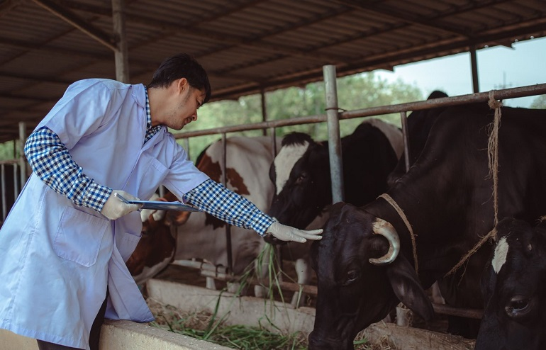
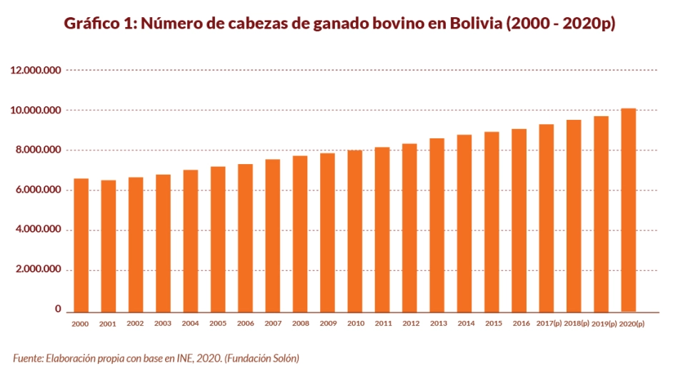

Noticias
Ganadería del Futuro: Una Visión Revolucionaria
En un mundo en constante evolución, la ganadería no se queda atrás. Imagina un futuro en el que la ganadería sea más sostenible, eficiente y respetuosa con el medio ambiente. Esta visión revolucionaria está cobrando vida gracias a innovaciones sorprendentes y tecnologías de vanguardia que están transformando la industria ganadera tal como la conocemos. En este artículo ficticio, exploraremos cómo la ganadería del futuro podría ser una fuerza impulsora para un mundo más verde y saludable.
¿Quienes somos?
Somos el Club Ganadero "Nuestra Herencia", una comunidad apasionada y dedicada a la promoción y el desarrollo de la ganadería en nuestra región. Fundado en 1995, hemos estado trabajando incansablemente para fomentar la excelencia en la cría de ganado, promover prácticas agrícolas sostenibles y fortalecer los lazos entre los ganaderos locales.
Nuestra mision
Fomentar la Excelencia Ganadera: En el corazón de nuestra misión está la búsqueda constante de la excelencia en la cría de ganado. Trabajamos incansablemente para mejorar las razas locales, promover prácticas de cría responsables y capacitar a nuestros miembros en técnicas de vanguardia. Promover la Sostenibilidad: Reconocemos la importancia de la sostenibilidad en la ganadería. Nos esforzamos por equilibrar las necesidades de la producción de carne y leche con la conservación del medio ambiente. Fomentamos prácticas ganaderas sostenibles que reduzcan el impacto ambiental y promovemos la biodiversidad en nuestras tierras. Educación y Comunidad: Creemos en la educación continua y el apoyo mutuo. Organizamos talleres, seminarios y charlas informativas para nuestros miembros y la comunidad en general. También fomentamos el intercambio de conocimientos y experiencias entre ganaderos para enriquecer la comunidad y fortalecer nuestra industria. Bienestar Animal: Nos comprometemos a garantizar el bienestar de los animales en todas las etapas de su vida. Promovemos prácticas de manejo ético y cuidado de los animales para garantizar que vivan vidas saludables y felices.
Estadisticas
Las estadisticas de nuestro club son:
